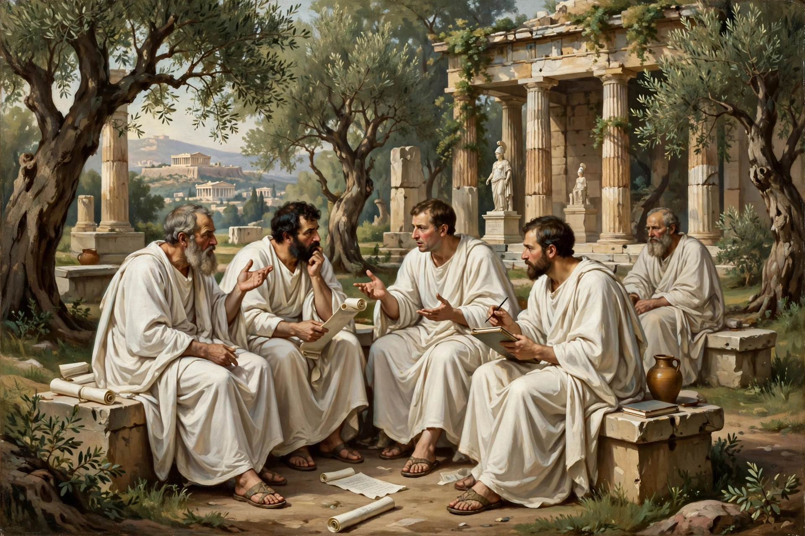

Academic skepticism

| Region | Western philosophy |
|---|---|
| Era | Hellenistic philosophy |
| Key figures | Arcesilaus, Carneades, Philo of Larissa |
Academic skepticism refers to the skeptical period of the Platonic Academy, dating from around 266 BC, when Arcesilaus became scholarch, until around 90 BC. Academic skeptics held that knowledge is impossible, in reaction against the dogmatism of the Stoics and Epicureans. They argued that nothing can be known with certainty, and instead developed accounts of plausible or convincing impressions as practical guides to action.
History
Arcesilaus turned Plato's Academy towards skeptical inquiry, using Socratic cross-examination to show that Stoic claims to certain knowledge (kataleptic impressions) could not be defended. Carneades, the school's most famous scholarch in the 2nd century BC, refined the position with his theory of the persuasive impression (pithanē phantasia) and famously argued for and against justice on successive days during an embassy to Rome in 155 BC. Philo of Larissa later softened the doctrine towards a fallibilism that influenced Cicero, our main surviving source for the school.
Relation to Pyrrhonism
Academic skepticism is distinguished from Pyrrhonism: Pyrrhonists suspended judgement even about whether knowledge is possible, whereas Academics were read — at least by their critics — as asserting that nothing can be known. The Academics replied that they followed appearances and probabilities without dogmatic assent.